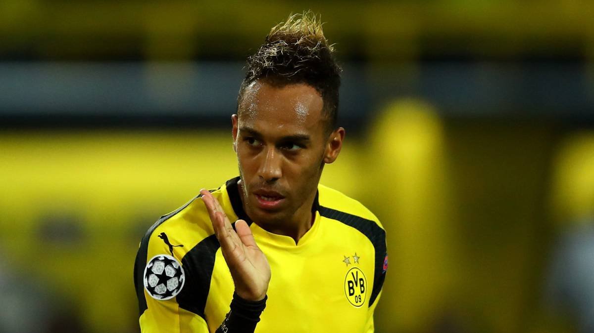

Honda al ataque
Confirma que Alonso llevará el nuevo motor
Estación central de Tokio. Casi amaneceía cuando Fernando Alonso cogía el Shinkansen Nozomi en Green Car hacia Nagoya y desde allí a Suzuka. Junto a Jenson Button y Stoffel Vandoorne tenía prevista visita a la fábrica de Honda en la ciudad donde se disputa este fin de semana el GP de Japon. Allí tuvo que hablar ante los trabajadores, todos con su mono blanco educados para aplaudir agradecidos al asturiano y sus compañeros pilotos de McLaren.
Ya el pasado año estuvo visitando la planta de Sakura, donde se fabrican los monoplazas de F1 y esta vez era el turno de los vehículos de calle. Honda es fundamental en McLaren y, ahora mismo, en el futuro deportivo de Fernando Alonso. Todos se necesitan, en un trío en el que ingleses, japoneses y español tienen la misma importancia.
Aubemeyang firma un pacto con el Dortmund
El delantero gabonés, pretendido por el Real Madrid, habría llegado al acuerdo tras frustrarse su salida en el último mercado de fichajes.

El culebrón Aubameyang resucitará el próximo verano, pero esta vez su duración dependerá del propio jugador y la decisión sobre el equipo en el que quiera jugar.
Y es que, tras frustrarse su salida el pasado verano, Aubameyang llegó a un pacto de caballeros con el Dortmund para que el club le deje marchar al final de la presente temporada, según información de Sport Bild que recoge la web Calciomercato.it.
Rebelión de las ligas europeas: planean boicotear la Champions
La asociación que las agrupa (EPFL) pretende romper el acuerdo que impide programar partidos coincidiendo con los que organiza la UEFA.
¿Se imaginan un Arsenal-Manchester United con la Premier League en juego programado el mismo día y a la misma hora que un Real Madrid-Bayern de vuelta de semifinales de la Champions compitiendo en audiencia televisiva mundial?
Lo que a día de hoy resultaría impensable además de imposible —la UEFA no permite televisar partidos de competiciones domésticas coincidiendo con la Champions League— podría hacerse realidad en breve.